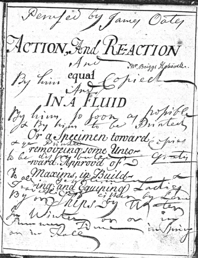
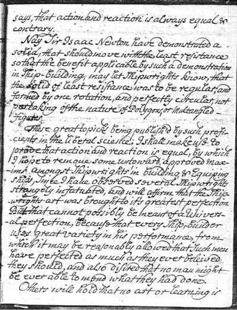
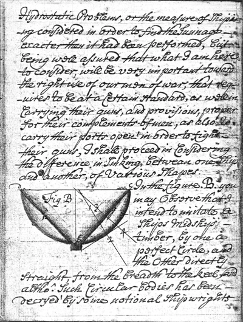
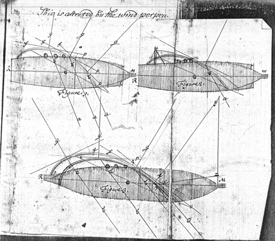
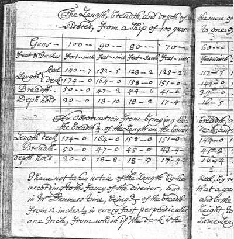

NEARA has always been interested in early travel across the oceans. James W. Mavor Jr was a significant figure in NEARA but he was primarily an oceanographic research engineer at Woods Hole Ocenographic Institution designing ships and submersibles. Later upon retirement he focused on NEARA-related topics such as ancient history and archaeoastronomy.
In 1978 James Mavor discovered at a friend's house a hand written manuscript titled:
James Mavor described the manuscript as follows:
The book is written in an informal style and I gather was not intended for publication. It documents an early attempt to apply Newton's principles to naval ship design. There is quite a bit of circumstantial evidence in the text to justify a date between 1717 and 1727, during the reign of George I.
I have read the two formal texts of William Sutherland, which are in the MIT library, "The Ship-builders Assistant", 1711, and "Britain's Glory", 1717. There are some similiarities in ideas such as comparison of ship forms with those of fish and water fowl, but of course there is great difference in form and style. The manuscript cites many well known people of the time and comments on abilities and personalities. It cites and interprets classic papers in the Phil. Trans. by various pioneers who were contemporaries of the author such as Newton, Bernoulli, Hugens, Varignon, Desaugliers. I have enjoyed reading these as we have a complete Phil. Trans. here in Woods Hole.
He then corresponded with a number of experts in New England and in Great Britain and had microfiche copies made and distributed. But he also made a photocopy of the manuscript which later ended up in NEARA's Archives, in the Subject Files in a folder named "Ships - Ancient".
Although it might be possible for you to read the manuscript at the Royal Museums Greenwich, for your convenience we have scanned the photocopy and made it available as a 250MB PDF file: William Sutherland's ca. 1725 manuscript Action and Reaction equal in a Fluid.
    